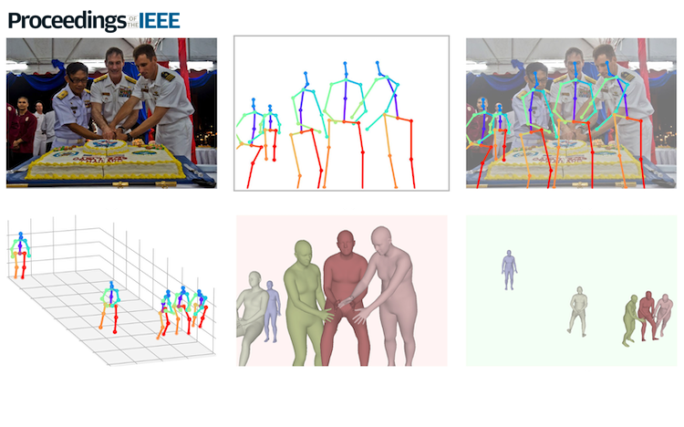

Research
I'm interested in computer vision, machine learning, optimization, and image processing. Much of my research is about inferring the physical world (shape, motion, color, light, etc) from images. Representative papers are highlighted.
|
|

|
Unlocking the Emotional World of Visual Media: An Overview of the Science, Research, and Impact of Understanding Emotion
James Z. Wang, Sicheng Zhao, Chenyan Wu*, Reginald B. Adams, Michelle G. Newman, Tal Shafir, Rachelle Tsachor
Proceedings of the IEEE, 2023 (*sole student author)
paper
/
arXiv
This 51-page article provides a comprehensive overview of the field of emotion analysis in visual media and discusses the latest research, challenges, and potential impact of artificial emotional intelligence on society.
|
|
|
Bodily Expressed Emotion Understanding Through Integrating Laban Movement Analysis
Chenyan Wu, Dolzodmaa Davaasuren, Tal Shafir, Rachelle Tsachor, James Z. Wang
Patterns, Cell Press, 2023
paper
/
arXiv
/
data
/
code
|
Feel free to steal this website's source code. Do not scrape the HTML from this page itself, as it includes analytics tags that you do not want on your own website — use the github code instead. Also, consider using Leonid Keselman's Jekyll fork of this page.
|
|
{kind=link}